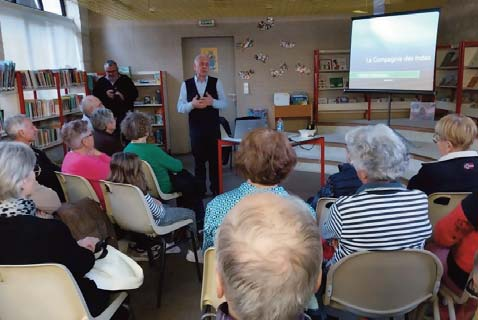
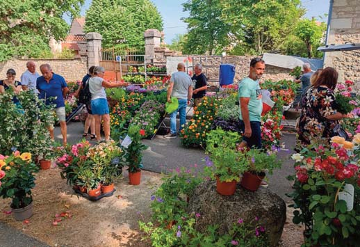

19 L’Association des amis de la médiathèque inter- communale de Montpezat de Quercy vous pro- pose régulièrement des conférences, diaporamas, extraits musicaux – débats – expositions à la Mé- diathèque Nous sommes ravis de vous accueillir toujours plus nombreux et nous vous remercions de votre présence Nous organisons chaque mois une animation «�LES VENDREDI DE LA MEDIATHEQUE » et un club de lecture mensuel. ANIMATIONS DU PRINTEMPS 4 22 Mai 2026 : « La Colombie culture-saveurs et réalité par Loréna Villarreal 4 26 Juin 2026 : ’Emmanuel MOUREAU « L’HERAL- DIQUE » – science des blasons » PROCHAINES ANIMATIONS 4 11 Septembre – MADO THIVEAUD – « historique du site de MERCUES » près de Cahors 4 23S eptembre – Dominique AUBERT « L’ALOE VERA » plante utilisée depuis des millénaires 4 23 Octobre – Pierre PRESSAC sur le Mythe « l’his- toire du Quercy » 4 Novembre : William BONNAREL -secret d’his- toire du Tarn et Garonne - date à arrêter 4 11 Décembre : Christine BONNAÏS - CLUB DE LECTURE Une fois par mois le mercredi après-midi de 16h à 18h30. Le Club est ouvert à tous. et l’ambiance est très amicale et chaleureuse ! Ap- pelez le 06 76 54 37 62 L’adhésion annuelle à l’Association des Amis de la Médiathèque est de 10 € par an - une carte d’adhérent vous sera remise – nous accueillons des conférenciers qui ne viennent pas toujours gratuitement – merci de nous aider. Contacts et information, Ssite des Médiathèques intercommunales : médiathèques.quercycaussadais.fr Tél. Médiathèque de Montpezat de Quercy : Phi- lippe ROUCHY 05 63 02 02 76 Pour tous renseignements sur notre Association francoise.godart82@orange.fr Tél. 06 76 54 37 62. Médiathèque Notre association poursuit son rythme de croisière. Toute l’Equipe est sur le pont pour la mise en œuvre des prochaines manifestations. MANIFESTATIONS 2026 : 4 notre traditionnel vide-grenier / marché aux �eurs / bourse d’échange se tiendra le dimanche 10 mai, en extérieur comme à l’accoutumée. 4 instauration d’une journée citoyenne : opération net- toyage, désherbage dans le village le 27 juin. Tous en- gagés pour un monde sans déchets : une mobilisation citoyenne essentielle pour préserver notre planète, au niveau du village et ses environs ! Rendez-vous à partir de 8 h 30, place de la Résistance, départ 9 h. Prévoir vos gants, cabas et petit outil de jardin. 4 traditionnelles visites des églises conduites par Claude MOUREAU les jeudis 16 juillet et 6 août 4 et en�n journée du patrimoine le 19 et 20 septembre. Un merci tout particulier à Claude MOUREAU qui s’im- Loisirs et patrimoine plique avec passion pour faire découvrir notre village, aux gens d’ici et aux touristes. Remerciements également à tous les membres de l’As- sociation ainsi qu’à la Municipalité, partenaire et pré- cieux soutien. Le Bureau